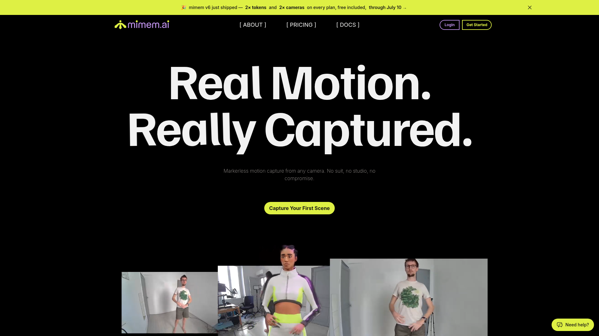

無需校正的多攝影機動捕系統，利用雲端 AI 進行 3D 重建與平滑處理。用現有設備（網路攝影機或手機）即可開始捕捉，FBX/BVH 格式輸出。

mimem AI 主打「無需校準」的多攝影機動捕——傳統多攝影機系統需要精確校準攝影機位置，mimem 的 AI 自動處理攝影機間的空間關係，大幅降低設置門檻。
⚠️ 傳統多攝影機動捕
✅ mimem AI 方案
mimem AI 展示——多攝影機無校正動捕與雲端 AI 重建
系統自動處理攝影機間的空間關係推斷、多視角融合、3D 骨架重建與動作平滑。使用者只需要放置攝影機並拍攝，其餘全部由雲端 AI 完成。
本工具在 AI 動作量產工作流中的定位與搭配方式。
需要高精度重現真實動作時，多攝影機提供更好品質。
不需要專業攝影棚，任何空間都能快速架設。
雲端處理結果可直接分享給團隊成員使用。
mimem AI 是極具潛力的多攝影機雲端動捕方案。無需校正、現有設備即可使用的低門檻特性非常吸引人。但目前仍在 Early Access 階段，定價與穩定性待確認。若正式發佈且價格合理，將是 AI 動作生成工具 Pipeline 中高精度影片動捕的重要補充。